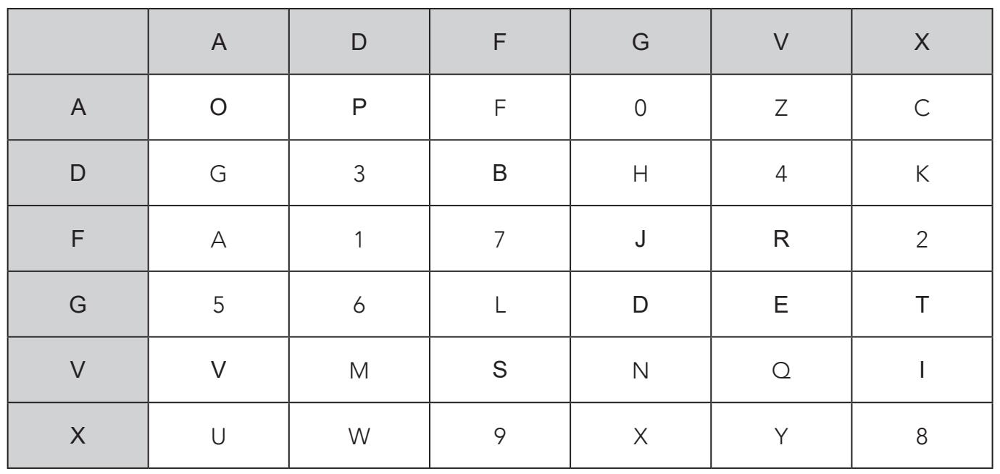
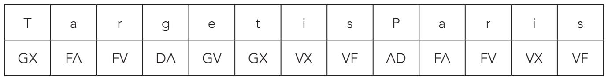
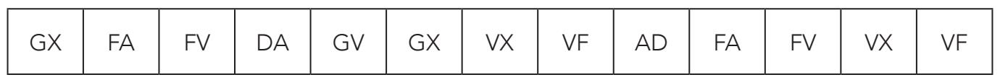
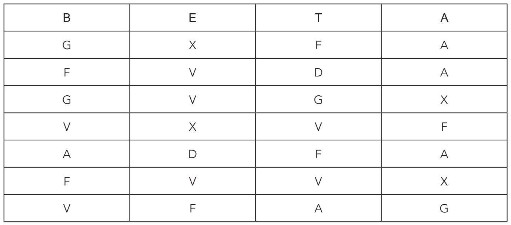
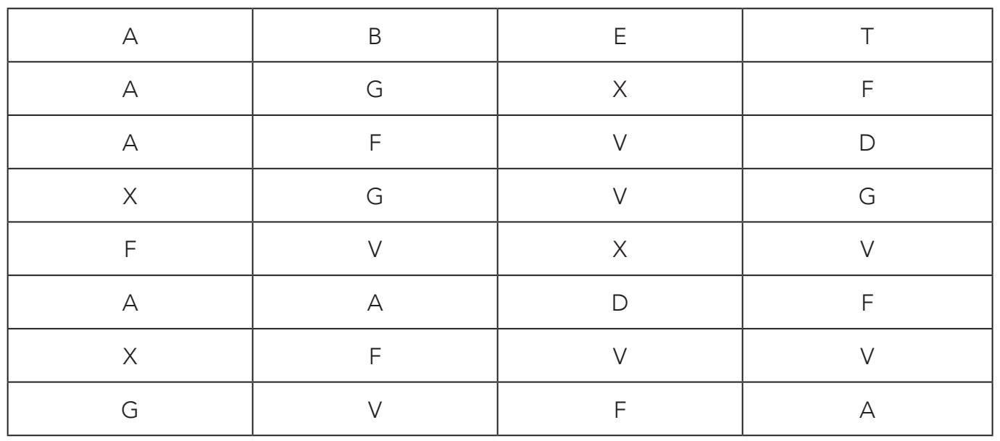
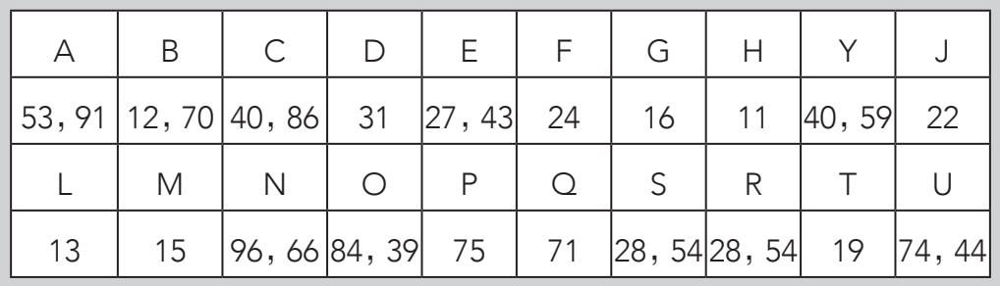
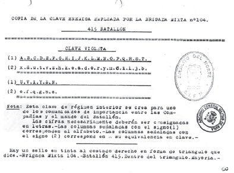
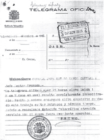
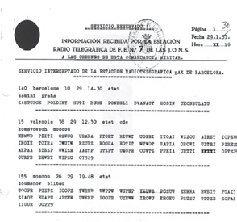

1918年6月，德国军队准备袭击法国首都。协约国抵抗的关键就在于能否截获德军信息并弄清他们的进攻计划。德军发往前线的信息是用ADFGVX密码加密的，在德军看来，它牢不可破。
关于这个密码，令我们感兴趣的地方就在于它结合了替换和换位算法。这是传统加密法中最精密的方法之一。1918年德国采用了这个密码，而在法国尚未注意到它的存在时，德国就已经铺天盖地般地用它来加密和解密信息了。幸运的是，天赋异禀的密码破译者乔治斯·潘万（Georges Painvin）当时正在法国中央密码局工作。他夜以继日地研究这个密码。1918年6月2日晚间，潘万成功破解了第一条信息，内容令人感觉不妙，那是对前线发出的命令：“Rush munitions。Even by dayif not seen。”（军火急速前进。白天也要隐秘前进。）技术分析显示，德军这条密电是从巴黎北部大约80千米的地方发出的，位置应在蒙迪迪耶和贡比涅之间。潘万成功破解的信息揭露了以德国为首的同盟国的进攻意图，使得协约国军队能够挫败此次攻击，最终赢得战争。法国把此事称为“电报大捷”。[书籍分 享V 信zmxsh998]
前面提到，ADFGVX密码包括两部分：替换和换位。首先是替换，我们列一张7×7的表格，第一行和第一列都包括字母ADFGVX。其余表格内随机填上36个字符：26个字母和从0到9的十个数字。字符的排列构成了密码的密钥，很明显，信息接收者有密钥才能理解信息的内容。

我们就用下方的基表来试试：
加密过程是，用ADFGVX表示坐标，把信息中的每个字母翻译为坐标的形式。坐标中第一个字符对应行，第二个对应列。比如，我们要把4加密，就写为“DV”。信息“Target isParis”（目标是巴黎）加密情况如下表所示：

讲到这儿，我们就知道这个密码用的是简单替换，使用频率分析就足以破解。
但是，密码还包括第二道程序：换位。收发双方商量好一个密钥单词，换位就依据它进行。过程如下：首先，创建一个表格，列数等于密钥单词的字母数，每个格内填上加密文本。将密钥单词的字母填入表格的顶行。以密钥单词“BETA”为例。创建一个新表格，顶行填入密钥单词，其余行填入替换加密信息的字母。所有空格内填入数字0，我们知道0用“AG”表示。
然后对信息“Target is Paris”进行第二次加密。首先回忆一下替换加密后的信息：

再应用密钥单词“BETA”生成一个新表：

接下来，再用换位加密法改变每列的位置，密钥字母按照字母表顺序排列，如下图所示：

把表格中的字母组合起来，就产生了加密信息，最终得到的加密信息是：
AAXFAXGGFGVAFVXVVXDVFFDGVFVA
我们可以发现，信息是由ADFGVX几个字母随机组合而成的。德国之所以选择这六个字母，是因为它们在莫尔斯电码中发音区别性非常大，这可以帮助接收者轻易判断出可能存在的传递错误。再者，因为它只包括六个字母，电报传递简单易行，所以经验不足的操作员也容易操作。
现在我们把目光转回本章开头的莫尔斯电码表，发现ADFGVX密码中每个字母对应的莫尔斯电码分别为：
A=·–
D=–··
F=··–·
G=––·
V=···–
X=–··–
接收者只需要随机分布的字母和基表上的数字，以及第二个换位密钥，就能译解这条信息了。
战壕代码
战争中，使用像ADFGVX这样的复杂密码非常不易。比如，在西班牙内战（1936—1939）中，有很多较为简单的替换算法，如：

可以发现，有几个字母的加密方式不止一个。例如R可以用28或54替换。单词“GUERRA”（战争）加密之后就是：167427285453。这些代码是主要的替换代码，叫作“战壕代码”，有专门用途。

图中的“紫色密钥”（Clave Violeta）是共和军104旅415营使用的密钥，被国民军截获。内容为：“密码必须用字母表示。用（1）标注的列（行）对应字母表，用（2）标注的列对应相应的代码。”
为了提高信息保密性，以佛朗哥为首的国民军部署了另一种武器——纳粹盟军提供的30台恩尼格玛密码机。这或许是军事史上第一次大规模使用加密仪器，德国在“二战”中也使用过。西班牙内战期间，英国曾试图破解该密码系统，但没有成功。


1936年10月27日发给共和西班牙长枪党法西斯分子在加那利群岛截获军的电报：“昨天你们加密的电的共和军编码信息。报……经证明无法破解。”